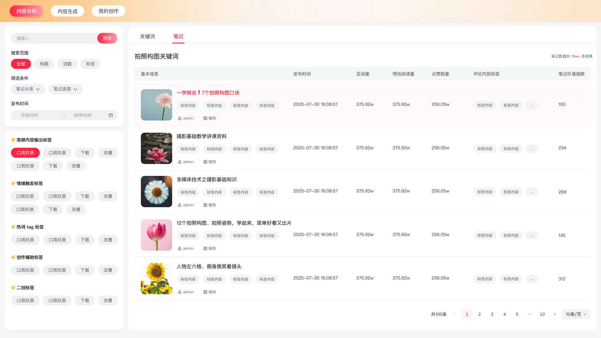
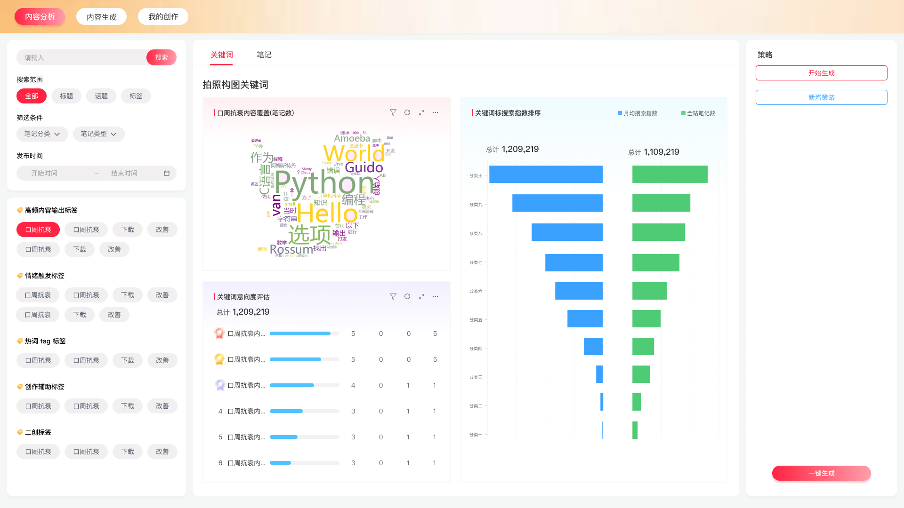
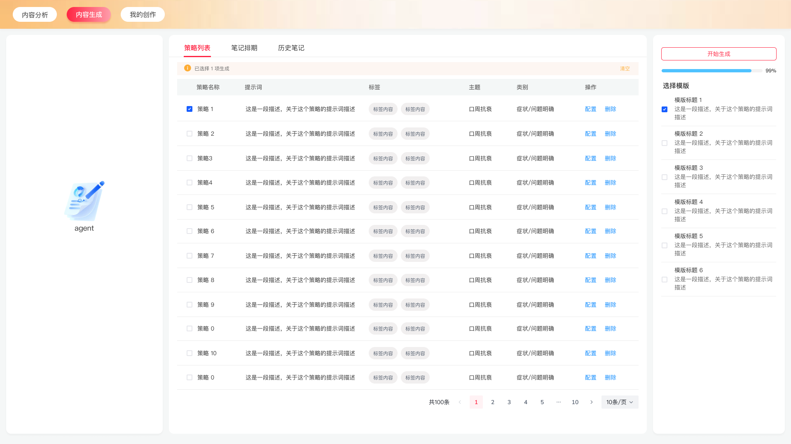
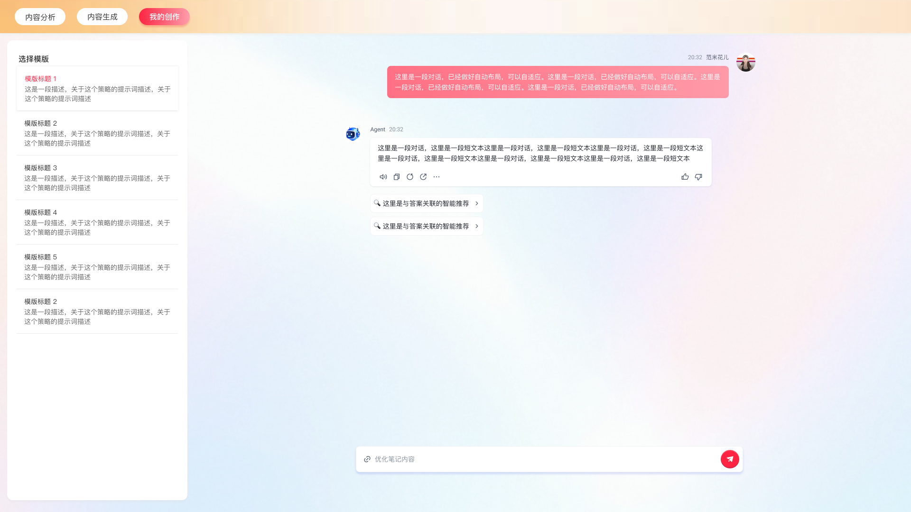
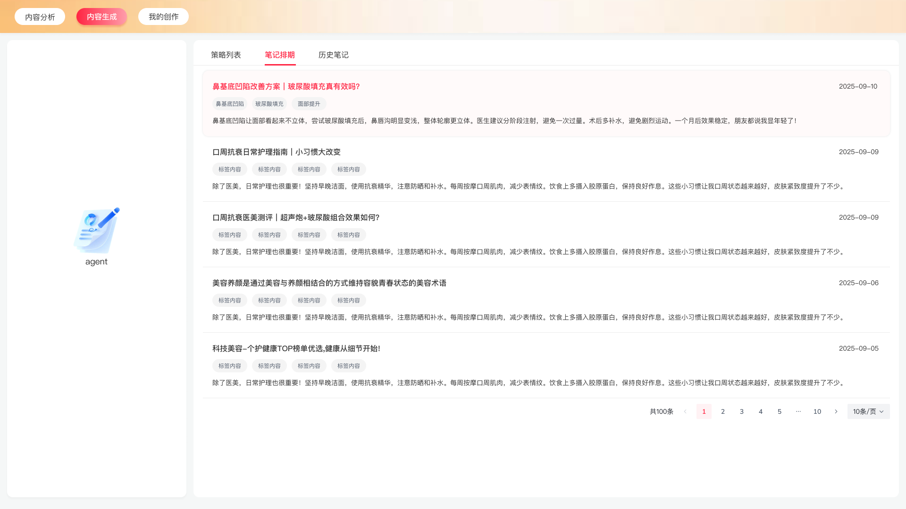

SOCIAL MEDIA / CONTENT INTELLIGENCE
社交媒体
运营 Agent
从热门内容，到下一篇好选题。
面向小红书内容运营，从热门笔记中提取主题、情绪与热词，以多维标签连接内容洞察与选题规划，再通过 LLM 辅助二创与内容生成。让创作不止于仿写，而是找到新的表达角度。
- 内容洞察
- 选题规划
- 二创生成
01 POPULAR CONTENT
下一篇好选题，先从读懂热门开始
产品设计稿
以热门笔记为分析起点，识别内容主题、表达方式与话题语境。先理解大家在讨论什么，再为选题积累有依据的创作线索。

02 STRUCTURED SIGNALS
不只提取热词，
更要留下创作线索
产品设计稿
将高频主题、情绪触发、平台热词、创作辅助与二创方向组织为多维标签。关键词分析是其中的观察窗口，让分散的内容信号成为后续选题可用的结构化信息。

03 EDITORIAL STRATEGY
同一个热点，找到不同的切入点
产品设计稿
把分析结果推进为可执行的选题策略：延伸新兴话题、反转原有视角，或融合不同主题。用具体创作方向回答“下一篇写什么”，而不是停留在一组关键词。

04 ASSISTED CREATION
让洞察，成为可以继续打磨的内容
产品设计稿
基于选题策略与二创方向，借助 LLM 生成候选内容，并在“我的创作”中集中呈现。把主题与表达线索带入创作过程，为运营者继续筛选、修改和完善提供起点。

05 CONTENT PLANNING
从单篇创作，走向有节奏的内容安排
排期设计
笔记排期视图探索如何将内容安排放到时间维度中，让运营者统筹待用选题与创作节奏。作为内容工作台的设计延伸，为后续运营安排提供清晰的计划视角。
